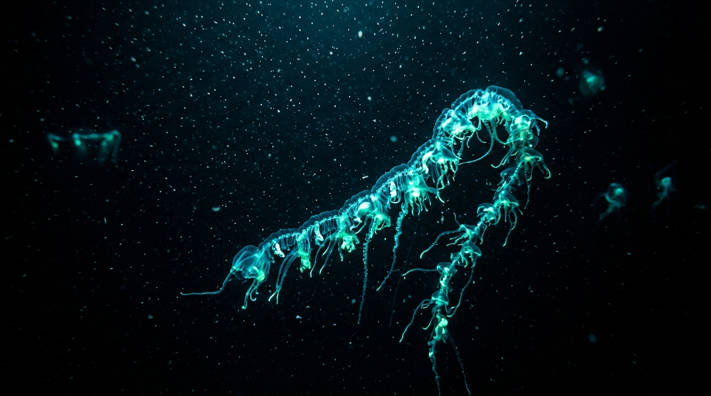

An Exploration of the Eternal Dark L’ABYSSE
Inspired by oceanic cartography, descend through every meter of Earth’s global ocean. From the sunlit epipelagic surface down past the Titanic to the deepest vertebrate and the crushing floor of Challenger Deep.

Colonies of gelatinous zooids reaching up to 40 meters in length—longer than a blue whale—drifting through the bathypelagic currents while pulsing cyan luciferin bioluminescence to lure prey in the total darkness.
The Terminal Chasm (10,928m)
At the base of the Mariana Trench, the Pacific Plate is pushed beneath the Mariana Plate. At 10,928 meters, water density is increased by 5 percent due to extreme compressive force. Ordinary vertebrate enzymes would disintegrate without high concentrations of TMAO (trimethylamine N-oxide), the biological osmolyte that stabilizes cellular proteins against crushing barometric collapse.
The Frontier Yet Unmapped
We possess higher resolution maps of the topography of Mars and Venus than the floor of our own global ocean. Every expedition to the abyssal trenches reveals species whose cellular mechanics redefine our understanding of biology and the limits of life in the cosmos.